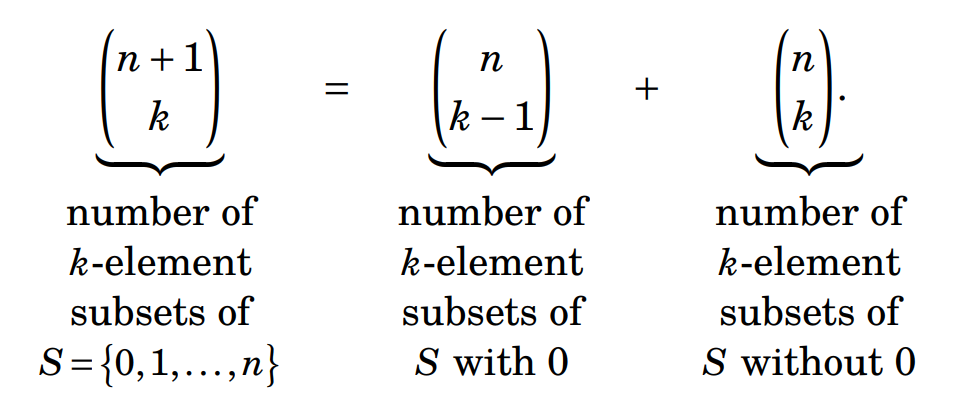
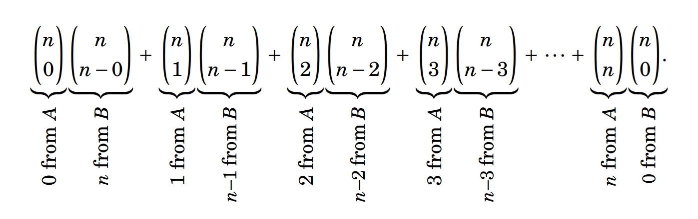
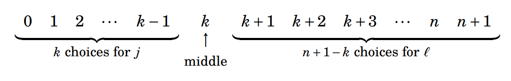
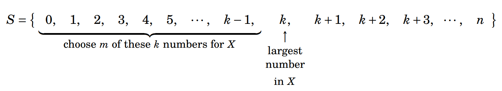

3.10 Combinatorial Proof¶
Combinatorial proof is a method of proving two different expressions are equal by showing that they are both answers to the same counting question. We have already used combinatorial proof (without calling it combinatorial proof) in proving Pascal’s formula \(\displaystyle \binom{n+1}{k} = \binom{n}{k-1} + \binom{n}{k}\) on page 90. There we argued that the left-hand side \(\displaystyle \binom{n+1}{k}\) is, by definition, the number of \(k\)-element subsets of the set \(S = \{0,1,2, \ldots, n \}\) with \(|S| = n + 1\). But the right- hand side also gives the number of \(k\)-element subsets of \(S\), because such a subset either contains 0 or it does not. We can make any \(k\)-element subset of \(S\) that contains 0 by starting with 0 and selecting \(k - 1\) other elements from \(\{1,2,\ldots,n\}\), in \(\displaystyle \binom{n}{k-1}\) ways. We can make any \(k\)-element subset that does not contain 0 by selecting \(k\) elements from \(\{1,2,\ldots,n\}\), and there are \(\displaystyle \binom{n}{k}\) ways to do this. Thus,
{kind=link}

Both sides count the number of \(k\)-element subsets of \(S\), so they are equal. This is combinatorial proof.
Combinatorial proof of the identity \(\binom{n+1}{k} = \binom{n}{k-1} + \binom{n}{k}\)
In the combinatorial proof for the identity \(\displaystyle \binom{n+1}{k} = \binom{n}{k-1} + \binom{n}{k}\), both sides are counting the same collection of objects, but in two different ways. \(\displaystyle \binom{n+1}{k}\) counts the number of \(k\)-element subsets out of \(n+1\) elements: the number of ways to choose \(k\) elements from a set with \(n+1\) elements (typically the set \(S = \{0,1,2,\ldots,n\}\) is used, which has \(n+1\) elements). Now split the \(\displaystyle \binom{n+1}{k}\) subsets into two types, every \(k\)-element subset of \(S\) must be in exactly one of these categories:
The \(k\)-element subset either contains an arbitrary distinguished element (here we pick \(0\), but note that this can any other element from \(S\)), or
The \(k\)-element subset does NOT contain an arbitrary distinguished element (here we pick \(0\), but note that this can any other element from \(S\)).
So instead of counting all \(k\)-element subsets directly, we can (1) count how many subsets contain the element \(0\), (2) count how many subsets do NOT contain the element \(0\), and (3) add these two results to get the same total result when counting directly.
Suppose a \(k\)-element subset contains \(0\), then one of its \(k\) choices is already fixed: it is the element \(0\). So now you can only choose from the remaining \(k-1\) elements available in \(\{1,2,\ldots,n\}\) (which has \(n\) elements without \(0\) available). This can be done in \(\displaystyle \binom{n}{k-1}\) ways. Once you decide the subset must contain the element 0, it is no longer a choice, and so you have already used up one of the \(k\) spots. You can thus only choose the remaining \(k-1\) elements, and you choose them from the remaining \(n\) elements.
If a subset does not contain \(0\), then all the \(k\) elements must come from \(\{1,2,\ldots,n\}\) (which has \(n\) elements without \(0\) available). So now we are choosing all \(k\) elements from \(n\) available elements. This can be done in \(\displaystyle \binom{n}{k}\) ways.
Since every \(k\)-element subset is in exactly one of these two groups, that means: \(\displaystyle \binom{n+1}{k} = \binom{n}{k-1} + \binom{n}{k}\).
The subsets on the left are all the \(k\)-subsets. The two terms on the right divide those subsets into two non-overlapping (exhaustive and disjoint) groups (i.e. one group with the (arbitrary) element \(0\) and without the element \(0\)).
Example: take \(n=4, \ k=2\), then the identity says: \(\displaystyle \binom{5}{2} = \binom{4}{1} + \binom{4}{2}\). \(\displaystyle \binom{5}{2} = 10\), so there are 10 2-element subsets/ways to choose 2 elements from \(S = \{0,1,2,3,4\}\) (with \(|S| = 5\)). Now split these subsets into two groups: one group with all the subsets that contain the element \(0\), and one group with all the subsets that do NOT contain the element \(0\).
The 2-element subsets containing the element \(0\) are: \(\{0,1\}\), \(\{0,2\}\), \(\{0,3\}\), and \(\{0,4\}\), which totals to \(\displaystyle \binom{4}{1} = 4\).
The 2-element subsets NOT containing the element \(0\) are: \(\{1,2\}\), \(\{1,3\}\), \(\{1,4\}\), \(\{2,3\}\), \(\{2,4\}\) and \(\{3,4\}\), which totals to \(\displaystyle \binom{4}{2} = 6\).
By the adding principle, the total number of 2-element subsets is \(\displaystyle 4+6=10=\binom{5}{2}\)
Also note that: \(\displaystyle \binom{n}{k} = \binom{n-1}{k-1} + \binom{n-1}{k}\)
Example 3.27: Use combinatorial proof to show \(\displaystyle \binom{n}{k} = \binom{n}{n-k}\)
Solution: First, by definition, if \(k < 0\) or \(k > n\), then both sides are 0, and thus equal. Therefore for the rest of the proof we can assume \(0 \leq k \leq n\). The left-hand side \(\displaystyle \binom{n}{k}\) is the number of \(k\)-element subsets of \(S = \{1,2,\ldots,n\}\). Every \(k\)-element subset \(X \subseteq S\) pairs with a unique \((n-k)\)-element subset \(\overline{X} = S - X \subseteq S\). Thus the number of \(k\)-element subsets of \(S\) equals the number of \((n-k)\)-element subsets of \(S\), which is to say \(\displaystyle \binom{n}{k} = \binom{n}{n-k}\). We could also derive \(\displaystyle \binom{n}{k} = \binom{n}{n-k}\) by using the formula for \(\displaystyle \binom{n}{k}\) and quickly get \(\displaystyle \binom{n}{n-k} = \dfrac{n!}{(n-k)!(n-(n-k))!} = \dfrac{n!}{(n-k)!k!} = \dfrac{n!}{k!(n-k)!} = \binom{n}{k}\). But you may feel that the combinatorial proof is “slicker” because it uses the meanings of the terms. Often it is flat-out easier than using formulas, as in the next example.
Our next example will prove that \(\displaystyle \sum_{k=0}^{n} \binom{n}{k}^{2} = \binom{2n}{n}\), for any positive integer \(n\) which is to say that \(\displaystyle \binom{n}{0}^{2} + \binom{n}{1}^{2} + \binom{n}{2}^{2} + \cdots + \binom{n}{n}^{2} = \binom{2n}{n}\). For example, if \(n = 5\), this statement asserts \(\displaystyle \binom{5}{0}^{2} + \binom{5}{1}^{2} + \binom{5}{2}^{2} + \binom{5}{3}^{2} + \binom{5}{4}^{2} + \binom{5}{5}^{2} = \binom{2\cdot5}{5}\), that is, \(\displaystyle 1^{2} + 5^{2} + 10^{2} + 10^{2} + 5^{2} + 1^{2} = \binom{10}{5}\), which is true, as both sides equal \(252\). In general, the statement says that the squares of the entries in the \(n\)-th row of Pascal’s triangle add up to \(\displaystyle \binom{2n}{n}\).
Example 3.28: Use a combinatorial proof to show that \(\displaystyle \sum_{k=0}^{n} \binom{n}{k}^{2} = \binom{2n}{n}\).
Solution: First, the right-hand side \(\displaystyle \binom{2n}{n}\) is the number of ways to select \(n\) things from a set \(S\) that has \(2n\) elements. Now let’s count this a different way. Divide \(S\) into two equal-sized parts, \(S = A \cup B\), where \(|A| = n\) and \(| B | = n\), and \(A \cap B = \varnothing\). For any fixed \(k\) with \(0 \leq k \leq n\), we can select \(n\) things from \(S\) by taking \(k\) things from \(A\) and \(n - k\) things from \(B\) for a total of \(k + (n-k) = n\) things. By the multiplication principle, we get \(\displaystyle \binom{n}{k} \cdot \binom{n}{n-k}\) \(n\)-element subsets of \(S\) this way. As \(k\) could be any number from 0 to \(n\), the number of ways to select \(n\) things from \(S\) is thus
{kind=link}

But because \(\displaystyle \binom{n}{n-k} = \binom{n}{k}\), this expression equals \(\displaystyle \binom{n}{0} \cdot \binom{n}{0} + \binom{n}{1} \cdot \binom{n}{1} + \binom{n}{2} \cdot \binom{n}{2} + \dots + \binom{n}{n} \cdot \binom{n}{n}\), which is \(\displaystyle \binom{n}{0}^{2} + \binom{n}{1}^{2} + \binom{n}{2}^{2} + \cdots + \binom{n}{n}^{2} = \sum_{k=0}^{n} \binom{n}{k}^{2}\). In summary, we’ve counted the ways to choose \(n\) elements from the set \(S\) with two methods. One method gives \(\displaystyle \binom{2n}{n}\), and the other gives \(\displaystyle \sum_{k=0}^{n} \binom{n}{k}^{2}\). Therefore \(\displaystyle \sum_{k=0}^{n} \binom{n}{k}^{2} = \binom{2n}{n}\).
Be on the lookout for opportunities to use combinatorial proof, and watch for it in your readings outside of this course. Also, try some of the exercises below. Sometimes it takes some creative thinking and false starts before you hit on an idea that works, but once you find it the solution is usually remarkably simple.
Exercises for Section 3.10¶
Use combinatorial proof to solve the following problems. You may assume that any variables \(m , n , k\) and \(p\) are non-negative integers.
Show that \(\displaystyle 1 ( n - 0 ) + 2 ( n - 1 ) + 3 ( n - 2 ) + 4 ( n - 3 ) + \cdots + ( n - 1 ) 2 + ( n - 0 ) 1 = \binom{n+2}{3}\). 🔴
Answer
Let \(S=\{0,1,2,3,\ldots,n,n+1\}\), which is a set with \(n+2\) elements. The right-hand side \(\displaystyle \binom{n+2}{3}\) of the equation is the number of ways to choose 3-element subsets out of the elements of \(S\). Let’s now count these 3-element subsets in a different way. Any such 3-element subset \(X \subseteq S\) can be written as \(X=\{j,k,l\}\), where \(0 \leq j < k < l \leq n+1\). Note that this forces the middle element \(k\) to be in the range \(1 < k < n\). Given a fixed middle element \(k\), there are exactly \(k\) choices for the smallest element \(j\) and there are exactly \((n+1 - k)\) choices for the largest element \(l\).
{kind=link}

By the multiplication principle, there are \(k \cdot 1 \cdot (n+1-k)\) possible 3-element subsets \(X\) for a given single fixed middle element \(k\). For example, if \(k=1\), there are \(1 \cdot 1 \cdot (n+1-1) = 1 \cdot (n-0)\) subsets \(X\) with middle element “\(1\)”. If \(k=2\), there are \(2 \cdot 1 \cdot (n+1-2) = 2 \cdot (n-1)\) subsets \(X\) with middle element “\(2\)”. If \(k=3\), there are \(3 \cdot 1 \cdot (n+1-3) = 3 \cdot (n-2)\) subsets \(X\) with middle element “\(3\)”. Thus the left-hand side of the equation counts up the number of 3-element subsets of \(S\), so it is equal to the right-hand side.
Equivalently \(\displaystyle \sum_{k=1}^{n} k \cdot 1 \cdot (n+1-k) = \binom{n+2}{3}\). The same collection is counted in two different ways. This set has \(n+2\) elements, so the total number of 3-element subsets is \(\displaystyle \binom{n+2}{3}\). Once \(k\) is fixed, then there is one choice for the middle element \(k\), the smallest element \(j\) must come from \(\{0,1,\ldots,k-1\}\) (there are exactly \(k\) choices for \(j\)), and the largest element \(l\) must come from \(\{k+1,k+2,\ldots,n,n+1\}\) (there are exactly \((n+1-k)\) choices for \(l\)). So for a fixed middle element \(k\), the number 3-element subsets that can be formed is \(k \cdot 1 \cdot (n+1-k)\). Now let \(k\) run from 1 to \(n\), and you get \(1 ( n - 0 ) + 2 ( n - 1 ) + 3 ( n - 2 ) + 4 ( n - 3 ) + \cdots + ( n - 1 ) 2 + ( n - 0 ) 1\).
For example: let \(n=4\), then \(n+2=6\) and \(S=\{0_{(n+2)},1,2,3,4_{(n)},5_{(n+1)}\}\). Then there are \(\displaystyle \binom{n+2}{3} = \binom{6}{3} = \frac{6 \cdot 5 \cdot 4 \cdot 3!}{3! \cdot 3!} = 20\) 3-element subsets that can be made from the 6 elements in \(S=\{0,1,2,3,4,5\}\). Likewise, \(\displaystyle \sum_{k=1}^{n} k \cdot 1 \cdot (n+1-k) = \sum_{k=1}^{4} k \cdot 1 \cdot (4+1-k)\) counts the 3-element subsets that can be made from the 6 elements in \(S=\{0,1,2,3,4,5\}\):
\(k=1\): there are \(k \cdot 1 \cdot (4+1-k) = 1 \cdot 1 \cdot (4+1-1) = 4\) 3-element subsets that can be made with \(k=1\) in the middle postion: \(\{j,k,l\} = \{0,1,2\}, \{0,1,3\}, \{0,1,4\}, \{0,1,5\}\). Note that \(j \in \{0\}\) and \(l \in \{2,3,4,5\}\).
\(k=2\): there are \(k \cdot 1 \cdot (4+1-k) = 2 \cdot 1 \cdot (4+1-2) = 6\) 3-element subsets that can be made with \(k=2\) in the middle postion: \(\{j,k,l\} = \{0,2,3\}, \{0,2,4\}, \{0,2,5\}, \{1,2,3\}, \{1,2,4\}, \{1,2,5\}\). Note that \(j \in \{0,1\}\) and \(l \in \{3,4,5\}\).
\(k=3\): there are \(k \cdot 1 \cdot (4+1-k) = 3 \cdot 1 \cdot (4+1-3) = 6\) 3-element subsets that can be made with \(k=3\) in the middle postion: \(\{j,k,l\} = \{0,3,4\}, \{0,3,5\}, \{1,3,4\}, \{1,3,5\}, \{2,3,4\}, \{2,3,5\}\). Note that \(j \in \{0,1,2\}\) and \(l \in \{4,5\}\).
\(k=4\): there are \(k \cdot 1 \cdot (4+1-k) = 4 \cdot 1 \cdot (4+1-4) = 4\) 3-element subsets that can be made with \(k=4\) in the middle postion: \(\{j,k,l\} = \{0,4,5\}, \{1,4,5\}, \{2,4,5\}, \{3,4,5\}\). Note that \(j \in \{0,1,2,3\}\) and \(l \in \{5\}\). Thus, there are \(\displaystyle \sum_{k=1}^{4} k \cdot 1 \cdot (4+1-k) = 4+6+6+4=20\) 3-element subsets that can be made from the 6 elements in \(S=\{0,1,2,3,4,5\}\).
Note: the same reasoning applies to 4-element, 5-element, etc. subsets:
For an odd number of elements in the subsets, fix the unique middle element. For example, \(\displaystyle \sum_{k=2}^{n-1} \binom{k}{2} \cdot 1 \cdot \binom{n+1-k}{2} = \binom{n+2}{5}\), i.e. for a 5-element subset \(\{a,b,k,c,d\}\) (with \(0 \leq a < b < k < c < d \leq n+1\)), choose 2 elements from the \(k\) elements to the left of \(k\), and choose 2 elements from the \((n+1-k)\) elements to the right of \(k\).
For an even number of elements in the subsets, fix the two middle elements. Then choose the remaining elements from the left and right sides. For example, \(\displaystyle \sum_{1 \leq b < c \leq n} b \cdot (n+1-c) = \binom{n+2}{4}\), i.e. for a 4-element subset \(\{a,b,c,d\}\) (with \(0 \leq a < b < c < d \leq n+1\) (note that a 4-element subset does not have a unique middle element, it has 2 middle elements \(b\) and \(c\)), choose 1 element to the left of \(b\) (there are exactly \(b\) choices for \(a\), namely \(\{0,1,2,\ldots,b-2,b-1\}\)), and choose 1 element to the right of \(c\) (there are exactly \(n+1-c\) choices for \(d\), namely \(\{c+1,c+2,\ldots,n,n+1\}\)).
Show that \(\displaystyle 1 + 2 + 3 + \cdots + n = \binom{n+1}{2}\). 🔴
Answer
\(\displaystyle \binom{n+1}{2}\) means: the number of ways to choose 2 elements from a set of \(n+1\) elements (i.e. the number of 2-element subsets that can be made from an \(n+1\)-element set). If we label the \(n+1\) elements as \(S = \{1,2,3,\ldots,n-1,n,n+1\}\), then every 2-element subset \(X \subseteq S\) can be written uniquely as \(X = \{i,j\}\) with \(1 \leq i < j \leq n+1\). Note that this is the standard way to describe all unordered pairs \((i,j)\) chosen from \(\{1,2,3,\ldots,n-1,n,n+1\}\). \(i<j\) is imposed because we want each 2-element subset to be counted exactly once (i.e. \(\{2,5\}\) could be written as \((2,5)\) or \((5,2)\) which represents the same chosen pair. But if \(i<j\) is imposed, then \((2,5)\) is allowed and \((5,2)\) is not allowed). Now we can group the 2-element subsets of \(S\) by their largest element \(j\):
if \(j = 1\), then \(1 \leq i < 1\), so there is no subset possible in this case. Note that \(i \in \varnothing\) and \(j \in \{1\}\).
if \(j = 2\), then \(1 \leq i < 2\), so there is only 1 subset possible: \(\{1,2\}\). Note that \(i \in \{1\}\) and \(j \in \{2\}\).
if \(j = 3\), then \(1 \leq i < 3\), so there are 2 subsets possible: \(\{1,3\}\) and \(\{2,3\}\). Note that \(i \in \{1,2\}\) and \(j \in \{3\}\).
if \(j = 4\), then \(1 \leq i < 4\), so there are 3 subsets possible: \(\{1,4\}\), \(\{2,4\}\), and \(\{3,4\}\). Note that \(i \in \{1,2,3\}\) and \(j \in \{4\}\).
\(\ldots\) (every time we move to a new largest \(j\), we create exactly one more possible partner to pair with) Therefore, if we let \(j\) run from 2 to \(n+1\), then the total number of 2-element subsets is \(\displaystyle \sum_{j=2}^{n+1} (j-1) = 1 + 2 + 3 + \cdots + n-1 + n\). Since we now have 2 counts of the same collection of subsets, they must be equal: \(\displaystyle 1 + 2 + 3 + \cdots + n = \binom{n+1}{2}\).
Show that \(\displaystyle \binom{n}{2} \binom{n-2}{k-2} = \binom{n}{k} \binom{k}{2}\). 🔴
Answer
Consider the following problem. From a group of \(n\) people, you need to select \(k\) people to serve on a committee, and then you also need to select 2 of these \(k\) people to lead the committee’s discussion. In how many ways can this be done? One approach is to first select \(k\) people from \(n\), and then select 2 of these \(k\) people to lead the discussion. By the multiplication principle, there are \(\displaystyle \binom{n}{k} \cdot \binom{k}{2}\) ways to make this selection. Another approach is to first select 2 of the \(n\) people to be the discussion leaders, and there are \(\displaystyle \binom{n}{2}\) ways to do this. Next we need to fill out the committee by selecting \(k-2\) people from the remaining \(n-2\) people, and there are \(\displaystyle \binom{n-2}{k-2}\) ways to do this. By the multiplication principle, there are \(\displaystyle \binom{n}{2} \cdot \binom{n-2}{k-2}\) ways to make the selection. By the previous two paragraphs, \(\displaystyle \binom{n}{2} \cdot \binom{n-2}{k-2}\) and \(\displaystyle \binom{n}{k} \cdot \binom{k}{2}\) are both answers to the same counting problem, so they are equal.
Show that \(P(n,k) = P(n-1,k) + k \cdot P(n-1,k-1)\). 🔴
Answer
\(P(n,k)\) counts the \(k\)-permutations of an \(n\)-element set (\(k\)-permutation of an \(n\)-element set is an ordered non-repetitive length-\(k\) list made from elements of the set; for example, if \(S = \{a, b, c, d\}\), then the 2-permutations of \(X\) are the non-repetitive lists that we can make from two elements of \(X\), of which there are 12: \((a,b), (a,c), (a,d), (b,a), (b,c), (b,d), (c,a), (c,b), (c,d), (d,a), (d,b), (d,c)\)). Every \(k\)-permutation of \(S = \{1,2,3,\ldots,n\}\) falls exactly into one of 2 (disjoint and exhaustive) cases:
the \(k\)-permutation does NOT use the element \(n\) (since the \(k\)-length list does not include the element \(n\), all \(k\)-permutations must come from \(\{1,2,3,\ldots,n-1\}\) and this is therefore counted in \(P(n-1,k)\) ways)
the \(k\)-permutation does use the element \(n\) (since the \(k\)-length list must contain the element \(n\), we must get the remaining \((k-1)\) distinct elements from the other \(n-1\) elements, which can be done in \(P(n-1,k-1)\) ways; then we must place \(n\) somewhere in the final list of length \(k\), and in a list of length \((k-1)\), there are exactly \(k\) possible positions for inserting the new element \(n\): \(k \cdot P(n-1,k-1)\)) Therefore \(P(n,k) = P(n-1,k) + k \cdot P(n-1,k-1)\).
Alternatively, using algebra: \(P(n,k) = \dfrac{n!}{(n-k)!}\) \(P(n-1,k) + k \cdot P(n-1,k-1) = \dfrac{(n-1)!}{((n-1)-k)!} + k \cdot \dfrac{(n-1)!}{((n-1)-(k-1))!} = \dfrac{(n-1)!}{(n-1-k)!} + k \cdot \dfrac{(n-1)!}{(n-k)!} = \dfrac{(n-1)! \cdot \big((n-k) \cdot (n-k-1)! + k \cdot (n-1-k)! \big)}{(n-1-k)! \cdot (n-k)!} = \dfrac{(n-1)! \cdot \big((n-k) + k \big)}{(n-k)!} = \dfrac{n!}{(n-k)!}\)
Show that \(\displaystyle \binom{2n}{2} = 2 \binom{n}{2} + n^{2}\). 🔴
Answer
Let \(S\) be a set with \(2n\) elements. Then the left-hand side counts the number of \(2\)-element subsets made from the elements in \(S\). Let’s now count this in a different way. Split up \(S\) (disjoint and exhaustively) as \(S = A \cup B\), where \(|A| = n = |B|\). We can now choose a \(2\)-element subset from the elements in \(S\) in 3 ways:
we could choose both elements from \(A\), and there are \(\displaystyle \binom{n}{2}\) ways to do this.
we could choose both elements from \(B\), and there are \(\displaystyle \binom{n}{2}\) ways to do this.
we could choose one element from \(A\) and then another element from \(B\), and by the multiplication principle there are \(n \cdot n = n^{2}\) ways to do this. Thus the number of \(2\)-element subsets made from the elements in \(S\) is \(\displaystyle \binom{n}{2} + \binom{n}{2} + n^{2} = 2 \cdot \binom{n}{2} + n^{2}\), and this is the right-hand side. Therefore the equation holds because both sides count the same thing.
Show that \(\displaystyle \binom{3n}{3} = 3 \binom{n}{3} + 6n \binom{n}{2} + n^{3}\).
Answer
Let \(S\) be a set with \(3n\) elements. Then the left-hand side counts the number of \(3\)-element subsets made from the elements in \(S\). Let’s now count this in a different way. Split up \(S\) (disjoint and exhaustively) as \(S = A \cup B \cup C\), where \(|A| = |B| = |C| = n\). We can now choose a \(3\)-element subset from the elements in \(S\) in 10 ways:
we could choose all 3 elements from \(A\), and there are \(\displaystyle \binom{n}{3}\) ways to do this.
we could choose all 3 elements from \(B\), and there are \(\displaystyle \binom{n}{3}\) ways to do this.
we could choose all 3 elements from \(C\), and there are \(\displaystyle \binom{n}{3}\) ways to do this.
we could choose 2 elements from \(A\) and 1 element from \(B\), and by the multiplication principle there are \(\displaystyle \binom{n}{2} \cdot n\) ways to do this.
we could choose 2 elements from \(A\) and 1 element from \(C\), and by the multiplication principle there are \(\displaystyle \binom{n}{2} \cdot n\) ways to do this.
we could choose 2 elements from \(B\) and 1 element from \(A\), and by the multiplication principle there are \(\displaystyle \binom{n}{2} \cdot n\) ways to do this.
we could choose 2 elements from \(B\) and 1 element from \(C\), and by the multiplication principle there are \(\displaystyle \binom{n}{2} \cdot n\) ways to do this.
we could choose 2 elements from \(C\) and 1 element from \(A\), and by the multiplication principle there are \(\displaystyle \binom{n}{2} \cdot n\) ways to do this.
we could choose 2 elements from \(C\) and 1 element from \(B\), and by the multiplication principle there are \(\displaystyle \binom{n}{2} \cdot n\) ways to do this.
we could choose 1 element from \(A\), 1 element from \(B\), and 1 element from \(C\), and by the multiplication principle there are \(n \cdot n \cdot n = n^{3}\) ways to do this. Thus the number of \(3\)-element subsets made from the elements in \(S\) is \(\displaystyle 3 \cdot \binom{n}{3} + 6 \cdot n \cdot \binom{n}{2} + n^{3}\), and this is the right-hand side. Therefore the equation holds because both sides count the same thing.
Show that \(\displaystyle \sum_{k=0}^{p} \binom{m}{k} \binom{n}{p-k} = \binom{m+n}{p}\). 🔴
Answer
Take three non-negative integers \(m\), \(n\) and \(p\). Let \(S\) be a set with \(|S|=m+n\), so the right-hand side counts the number of \(p\)-element subsets made from the elements in \(S\). Now let’s count this in a different way. Split \(S\) as \(S = A \cup B\), where \(|A|=m\) and \(|B|=n\). We can make any \(p\)-element subset from \(S\) by choosing \(k\) of its elements from \(A\) and \(p - k\) of its elements from \(B\), for any \(0 \leq k \leq p\). There are \(\displaystyle \binom{m}{k}\) ways to choose \(k\) elements from \(A\), and \(\displaystyle \binom{n}{p-k}\) ways to choose \(p-k\) elements from \(B\), so there are \(\displaystyle \binom{m}{k} \binom{n}{p-k}\) ways to make a \(p\)-element subset of \(S\) that has \(k\) elements from \(A\). As \(k\) could be any number between 0 and \(p\), the left-hand side of our equation sums up the \(p\)-element subsets of \(S\). Thus the left- and right-hand sides count the same thing, so they are equal.
For example: suppose \(m=n=p=3\), then \(|S| = 3+3 = 6\) with \(S = \{1,2,3,4,5,6\}\), \(A = \{1,2,3\}\), and \(B = \{4,5,6\}\). \(\displaystyle \binom{m+n}{p} = \binom{6}{3} = 20\), counts the number of \(3\)-element subsets made from the elements in \(S\). Likewise, \(\displaystyle \sum_{k=0}^{p} \binom{m}{k} \binom{n}{p-k} = \sum_{k=0}^{3} \binom{3}{k} \binom{3}{3-k}\) counts the number of \(3\)-element subsets made from the elements in \(A \cup B\):
\(k=0\): there is only \(\displaystyle \binom{3}{k} \cdot \binom{3}{3-k} = \binom{3}{0} \cdot \binom{3}{3-0} = 1 \cdot 1 = 1\) 3-element subset that can be made by selecting all 3 elements from \(A\) and no elements from \(B\): \(\{1,2,3\}\).
\(k=1\): there are \(\displaystyle \binom{3}{k} \cdot \binom{3}{3-k} = \binom{3}{1} \cdot \binom{3}{3-1} = 3 \cdot 3 = 9\) 3-element subsets that can be made by selecting 2 elements from \(A\) and 1 element from \(B\): \(\{1,2,4\}\), \(\{1,2,5\}\), \(\{1,2,6\}\), \(\{1,3,4\}\), \(\{1,3,5\}\), \(\{1,3,6\}\), \(\{2,3,4\}\), \(\{2,3,5\}\), and \(\{2,3,6\}\).
\(k=2\): there are \(\displaystyle \binom{3}{k} \cdot \binom{3}{3-k} = \binom{3}{2} \cdot \binom{3}{3-2} = 3 \cdot 3 = 9\) 3-element subsets that can be made by selecting 1 element from \(A\) and 2 elements from \(B\): \(\{1,4,5\}\), \(\{1,4,6\}\), \(\{1,5,6\}\), \(\{2,4,5\}\), \(\{2,4,6\}\), \(\{2,5,6\}\), \(\{3,4,5\}\), \(\{3,4,6\}\), and \(\{3,5,6\}\).
\(k=3\): there is only \(\displaystyle \binom{3}{k} \cdot \binom{3}{3-k} = \binom{3}{3} \cdot \binom{3}{3-3} = 1 \cdot 1 = 1\) 3-element subset that can be made by selecting no elements from \(A\) and all 3 elements from \(B\): \(\{4,5,6\}\). Thus, there are \(\displaystyle \sum_{k=0}^{3} \binom{3}{k} \binom{3}{3-k} = 1+9+9+1=20\) 3-element subsets that can be made from the 6 elements in \(A \cup B = S=\{1,2,3,4,5,6\}\).
Show that \(\displaystyle \sum_{k=0}^{m} \binom{m}{k} \binom{n}{p+k} = \binom{m+n}{m+p}\). 🔴
Answer
Take three non-negative integers \(m\), \(n\) and \(p\). Let \(S\) be a set with \(|S|=m+n\), so the right-hand side counts the number of \((m+p)\)-element subsets made from the elements in \(S\). Now let’s count this in a different way. Split \(S\) as \(S = A \cup B\), where \(|A|=m\) and \(|B|=n\). We can make any \((m+p)\)-element subset from \(S\) by choosing \(k\) of its elements from \(A\) and \((p + k)\) of its elements from \(B\). Following this through, the chosen size of the subsets is \(k+(p+k) = p+2k\), which depends on \(k\) and is false, because it does not equal the predetermined size of \((m+p)\)! We can resolve this by re-interpreting \(\displaystyle \binom{m}{k}\) as follows: “choose \(k\) elements from \(A\) that will be left out”. Choosing \(k\) elements that are excluded is equivalent to choosing \((m-k)\) elements that are included in order to get to the total subset size of \((m+p)\). Therefore \(\displaystyle \sum_{k=0}^{m} \binom{m}{m-k} \binom{n}{(m+p)-(m-k)} = \sum_{k=0}^{m} \binom{m}{k} \binom{n}{p+k}\). Thus the left- and right-hand sides count the same thing, so they are equal.
For example: suppose \(m=2\), \(n=3\), and \(p=1\), then \(|S| = 2+3 = 5\) with \(S = \{1,2,3,4,5\}\), \(A = \{1,2\}\), and \(B = \{3,4,5\}\). \(\displaystyle \binom{m+n}{m+p} = \binom{5}{3} = 10\), counts the number of \(3\)-element subsets made from the elements in \(S\). Likewise, \(\displaystyle \sum_{k=0}^{m} \binom{m}{k} \binom{n}{p+k} = \sum_{k=0}^{2} \binom{2}{k} \binom{3}{1+k}\) counts the number of \(3\)-element subsets made from the elements in \(A \cup B\):
\(k=0\): there are \(\displaystyle \binom{2}{k} \cdot \binom{3}{1+k} = \binom{2}{0} \cdot \binom{3}{1} = 1 \cdot 3 = 3\) 3-element subsets that can be made by excluding no elements from \(A\) and selecting 1 element from \(B\): \(\{1,2,3\}\), \(\{1,2,4\}\), and \(\{1,2,5\}\).
\(k=1\): there are \(\displaystyle \binom{2}{k} \cdot \binom{3}{1+k} = \binom{2}{1} \cdot \binom{3}{2} = 2 \cdot 3 = 6\) 3-element subsets that can be made by excluding 1 element from \(A\) and selecting 2 elements from \(B\): \(\{1,3,4\}\), \(\{1,3,5\}\), \(\{1,4,5\}\), \(\{2,3,4\}\), \(\{2,3,5\}\), and \(\{2,4,5\}\).
\(k=2\): there is only \(\displaystyle \binom{2}{k} \cdot \binom{3}{1+k} = \binom{2}{2} \cdot \binom{3}{3} = 1 \cdot 1 = 1\) 3-element subset that can be made by excluding all elements from \(A\) and selecting all elements from \(B\): \(\{3,4,5\}\). Thus, there are \(\displaystyle \sum_{k=0}^{2} \binom{2}{k} \binom{3}{1+k} = 3+6+1=10\) 3-element subsets that can be made from the 5 elements in \(A \cup B = S=\{1,2,3,4,5\}\).
Note that \(\displaystyle \binom{m}{k}\) does not have to mean “choose \(k\) elements to be included”; it can also mean (a) “choose \(k\) elements to be excluded”, (b) “choose \(k\) special elements”, (c) “choose \(k\) elements of a certain type”, (d) “choose \(k\) elements with some property”.
Show that \(\displaystyle \sum_{k=m}^{n} \binom{k}{m} = \binom{n+1}{m+1}\). 🔴
Answer
Let \(S = \{0_{(n+1)},1,2,\ldots,n\}\), so \(|S|=n+1\). The right-hand side of our equation counts the number of subsets \(X \subseteq S\) with size \(m+1\) elements. Now let’s think of a way to make such an \(X \subseteq S\) with \(|X| = m+1\). We could begin by selecting a largest element \(k\) for \(X\). Now, once we have chosen \(k\), there are \(k\) elements in \(S\) to the left of \(k\), and we need to choose \(m\) of them to go in \(X\) (so these, along with \(k\), form the set \(X\)).
{kind=link}

There are \(\displaystyle \binom{k}{m}\) ways to choose these \(m\) numbers, so there are \(\displaystyle \binom{k}{m}\) subsets of \(S\) whose largest element is \(k\). Notice that we must have \(m \leq k \leq n\). (The largest element \(k\) of \(X\) cannot be smaller than \(m\) because we need at least \(m\) elements on its left.) Summing over all possible largest values in \(X\), we see that \(\displaystyle \sum_{k=m}^{n} \binom{k}{m}\) equals the number of subsets of \(S\) with \(m+1\) elements. The previous two paragraphs show that \(\displaystyle \sum_{k=m}^{n} \binom{k}{m}\) and \(\displaystyle \binom{n+1}{m+1}\) are answers to the same counting question, so they are equal.
This is called the hockey-stick identity.
Show that \(\displaystyle \sum_{k=1}^{n} k \binom{n}{k} = n 2^{n-1}\). 🔴
Answer
Think about forming a non-empty committee from \(n\) people, and then choosing a captain from among the people on that committee. First count by committee size. If the committee has size \(k\), there are \(\displaystyle \binom{n}{k}\) ways to choose the committee and \(k\) ways to choose its captain. Summing over \(k\) gives every possible combination of a committee of size \(k\) and a captain within that committee: \(\displaystyle \sum_{k=1}^n k\binom{n}{k}\). Think of \(\displaystyle k \cdot \binom{n}{k}\) as choosing a \(k\)-element subset and then marking one of its elements. Now count another way. First choose the captain: \(n\) choices. Then each of the remaining \(n−1\) people independently either joins or does not join the committee, giving \(2^{n-1}\) choices. By the multiplication principle, \(n \cdot 2^{n-1}\) gives every possible combination of a captain and a committee of size \(k\). Thus the same set of objects is counted in two ways, so \(\displaystyle \sum_{k=1}^{n} k \binom{n}{k} = n 2^{n-1}\). Same process, two counts, same answer.
Example: suppose \(n=3\) and 3 people in set \(S = \{A,B,C\}\). We want to count all ways to form a nonempty committee and choose a captain from inside it. Count by committee size: \(\displaystyle \sum_{k=1}^{n} k \cdot \binom{n}{k} = \sum_{k=1}^{3} k \cdot \binom{3}{k}\):
\(k=1\): there are 3 possible size 1 committees: \(\{A\}\), \(\{B\}\), and \(\{C\}\), and each one has 1 possible captain, so by the multiplication principle there are \(\displaystyle k \cdot \binom{3}{k} = 1 \cdot \binom{3}{1} = 1 \cdot 3 = 3\) possible combinations.
\(k=2\): there are 3 possible size 2 committees: \(\{A,B\}\), \(\{A,C\}\), and \(\{B,C\}\), and each one has 2 possible captains, so by the multiplication principle there are \(\displaystyle k \cdot \binom{3}{k} = 2 \cdot \binom{3}{2} = 2 \cdot 3 = 6\) possible combinations.
\(k=3\): there is only 1 possible size 3 committee: \(\{A,B,C\}\), and for this committee there are 3 possible captains, so by the multiplication principle there are \(\displaystyle k \cdot \binom{3}{k} = 3 \cdot \binom{3}{3} = 3 \cdot 1 = 3\) possible combinations. Therefore \(\displaystyle \sum_{k=1}^{3} k \cdot \binom{3}{k} = 3 + 6 + 3 = 12\).
Count by choosing the captain: there are 3 choices for a captain when \(n=3\). Then the other 2 people each either join the committee or not, so there are \(2^{n-1} = 2^{2} = 4\) possible committees. By the multiplication principle, there are \(3\cdot 4 = 12\) possible combinations.
if \(A\) is captain, then the possible committees from \(\{B,C\}\) are \(\mathscr{P}(\{B,C\}) = 2^{2} = 4\): \(\{\}\), \(\{B\}\), \(\{C\}\), and \(\{B,C\}\). All possible combinations are therefore: \((A, \{\})\), \((A, \{B\})\), \((A, \{C\})\), and \((A, \{B,C\})\).
if \(B\) is captain, then the possible committees from \(\{A,C\}\) are \(\mathscr{P}(\{A,C\}) = 2^{2} = 4\): \(\{\}\), \(\{A\}\), \(\{C\}\), and \(\{A,C\}\). All possible combinations are therefore: \((B, \{\})\), \((B, \{A\})\), \((B, \{C\})\), and \((B, \{A,C\})\).
if \(C\) is captain, then the possible committees from \(\{A,B\}\) are \(\mathscr{P}(\{A,B\}) = 2^{2} = 4\): \(\{\}\), \(\{A\}\), \(\{B\}\), and \(\{A,B\}\). All possible combinations are therefore: \((C, \{\})\), \((C, \{A\})\), \((C, \{B\})\), and \((C, \{A,B\})\).
Show that \(\displaystyle \sum_{k=0}^{n} 2^{k} \binom{n}{k} = 3^{n}\). 🔴
Answer
Consider the problem of counting the number of length-\(n\) lists made from the symbols \(\{a, b, c\}\), with repetition allowed. Each list has \(n\) positions and 3 possible symbols for each position, so there are \(3 \cdot 3 \cdot 3 \cdot \ldots \cdot 3 \ (\text{with } n \text{ positions}) = 3^{n}\) such lists, and thus the right-hand side counts the total number of such length-\(n\) lists (with repetition allowed). On the other hand, given \(k\) with \(0 \leq k \leq n\), count the number of length-\(n\) lists that have exactly \(k\) entries unequal to the symbol \(a\). There are \(\displaystyle 2^{k} \binom{n}{k}\) such lists. (First choose \(k\) of the \(n\) list positions to be filled with either the symbol \(b\) or \(c\), in \(\displaystyle \binom{n}{k}\) ways. Then fill these \(k\) positions with \(b\)’s and \(c\)’s in \(2^{k}\) ways. Fill any remaining positions with the symbol \(a\).) As \(k\) could be any number between \(0\) and \(n\), the left-hand side of our equation counts up the number of length-\(n\) lists made from the symbols \(\{a, b, c\}\). Thus the right- and left-hand sides count the same thing, so they are equal.
For example: take \(n=2\). The number of length-\(2\) lists with repetition allowed, made from 3 symbols \(\{a, b, c\}\) is \(3 \cdot 3 = 3^{2} = 9\) : \((a,a)\), \((a,b)\), \((a,c)\), \((b,a)\), \((b,b)\), \((b,c)\), \((c,a)\), \((c,b)\), and \((c,c)\). We can also count this total number of length-\(2\) lists by splitting into 3 groups:
\(k=0\): choose 0 of the 2 list positions to be filled with the symbols \(b\) or \(c\), and fill the remaining positions (\(n-k = 2\)) with the symbol \(a\). There is \(\displaystyle 2^{0} \cdot \binom{2}{0} = 1 \cdot 1 = 1\) such list: \((a,a)\).
\(k=1\): choose 1 of the 2 list positions to be filled with the symbols \(b\) or \(c\), and fill the remaining positions (\(n-k = 1\)) with the symbol \(a\). There are \(\displaystyle 2^{1} \cdot \binom{2}{1} = 2 \cdot 2 = 4\) such lists: \((b,a)\), \((c,a)\), \((a,b)\), and \((a,c)\).
\(k=2\): choose 2 of the 2 list positions to be filled with the symbols \(b\) or \(c\), and fill the remaining positions (\(n-k = 0\)) with the symbol \(a\). There are \(\displaystyle 2^{2} \cdot \binom{2}{2} = 4 \cdot 1 = 4\) such lists: \((b,b)\), \((b,c)\), \((c,c)\), and \((c,b)\). Thus \(\displaystyle \sum_{k = 0}^{2} 2^{k} \cdot \binom{2}{k} = 2^{0} \cdot \binom{2}{0} + 2^{1} \cdot \binom{2}{1} + 2^{2} \cdot \binom{2}{2} = 1 + 4 + 4 = 9 = 3^{2}\).
Show that \(\displaystyle \sum_{k = 0}^{n} \binom{n}{k} \binom{k}{m} = \binom{n}{m} 2^{n-m}\). 🔴
Answer
The factor \(\displaystyle \binom{n}{k} \binom{k}{m}\) naturally describes a nested 2-step choice: first choose a \(k\)-element subset from an \(n\)-element set, then from that chosen \(k\)-element subset, choose an \(m\)-element subset. The sum over \(k\) suggests that we are counting all the ways to make a nested choice, regardless of the intermediate size \(k\). Let \(S = \{1,2,3,\ldots,n\}\), so \(|S| = n\). Now consider counting all ordered pairs \((A,B)\) such that \(B \subseteq A \subseteq S\) and \(|B| = m\). So \(A\) is some subset of \(S\), and \(B\) is an \(m\)-element subset contained inside \(A\). Suppose \(|A| = k\), then there are \(\displaystyle \binom{n}{k}\) ways to choose subset \(A\) from \(S\). And once the subset \(A\) is chosen, there are \(\displaystyle \binom{k}{m}\) ways to choose \(B \subseteq A\) with \(|B|=m\). So for a fixed \(k\), the number of pairs \((A,B)\) is \(\displaystyle \binom{n}{k} \binom{k}{m}\). Now let \(k\) run from \(0\) to \(n\), then the total number of pairs is \(\displaystyle \sum_{k = 0}^{n} \binom{n}{k} \binom{k}{m}\). Now counting the same objects \((A,B)\) in a different order: by choosing the subset \(B\) first. Since \(B\) must have size \(m\), there are \(\displaystyle \binom{n}{m}\) ways to choose \(B \subseteq S\). Once \(B\) is fixed, \(A\) must contain all elements of \(B\), because \(B \subseteq A\). Each of the remaining \(n-m\) elements has exactly 2 choices: either be included in \(A\), or NOT included in \(A\) (these elements are available but optional when building \(A\), but because \(B \subseteq A\) every element in \(B\) is forced to be in \(A\)). These choices are independent (include or not), so the number of possible sets \(A\) containing \(B\) is \(2 \cdot 2 \cdot 2 \cdot \ldots 2 \ (\text{with } n-m \text{ elements}) = 2^{n-m}\). Therefore the total number of pairs \((A,B)\) is \(\displaystyle \binom{n}{m} 2^{n-m}\). Since both expressions count the same set of pairs \((A,B)\), they must be equal: \(\displaystyle \sum_{k = 0}^{n} \binom{n}{k} \binom{k}{m} = \binom{n}{m} 2^{n-m}\).
For example: take \(S = \{1,2,3,4,5\}\) and \(B = \{2,5\}\), so \(n=5\) and \(m=2\). Now \(A\) must contain \(\{2,5\}\) because \(B \subseteq A\). Therefore every valid \(A\) looks like \(A = \{2,5\} \cup \mathscr{P}(S-B)\) where the powerset of all the remaining elements is any subset from \(\{1,3,4\}\):
\(\varnothing\)
\(\{1\}\)
\(\{3\}\)
\(\{4\}\)
\(\{1,3\}\)
\(\{1,4\}\)
\(\{3,4\}\)
\(\{1,3,4\}\)
So there are \(2 \cdot 2 \cdot 2 = 2^{5-2} = 2^{3} = 8\) such subsets in the powerset. Furthermore, there are \(\displaystyle \binom{5}{2} = 10\) ways to select 2 elements out of the 5 elements in \(S\).
It follows that \(\displaystyle \sum_{k = 0}^{5} \binom{5}{k} \binom{k}{2} = \binom{5}{0} \binom{0}{2} + \binom{5}{1} \binom{1}{2} + \binom{5}{2} \binom{2}{2} + \binom{5}{3} \binom{3}{2} + \binom{5}{4} \binom{4}{2} + \binom{5}{5} \binom{5}{2} = 1 \cdot 0 + 5 \cdot 0 + 10 \cdot 1 + 10 \cdot 3 + 5 \cdot 6 + 1 \cdot 10 = 80 = 10 \cdot 8 = \binom{5}{2} 2^{5-3}\).